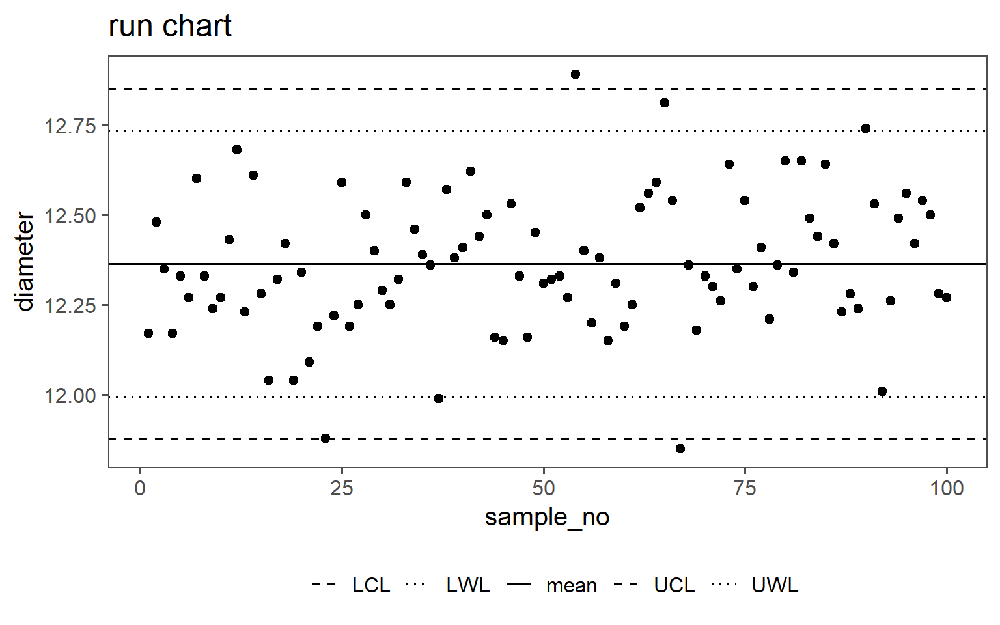
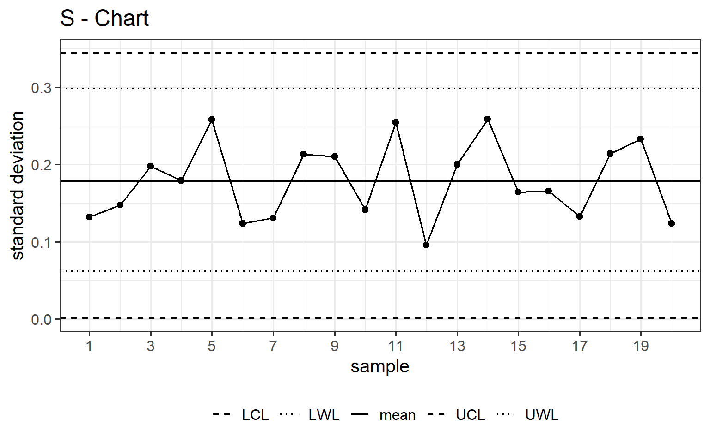
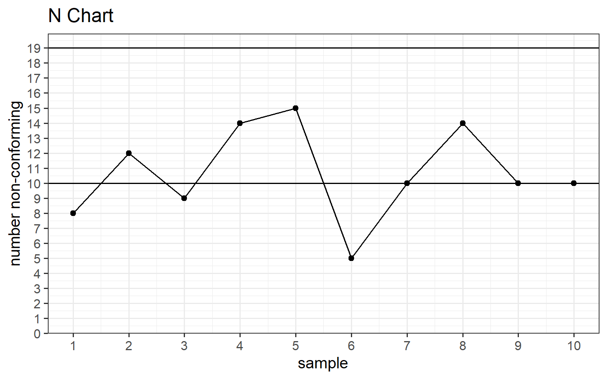
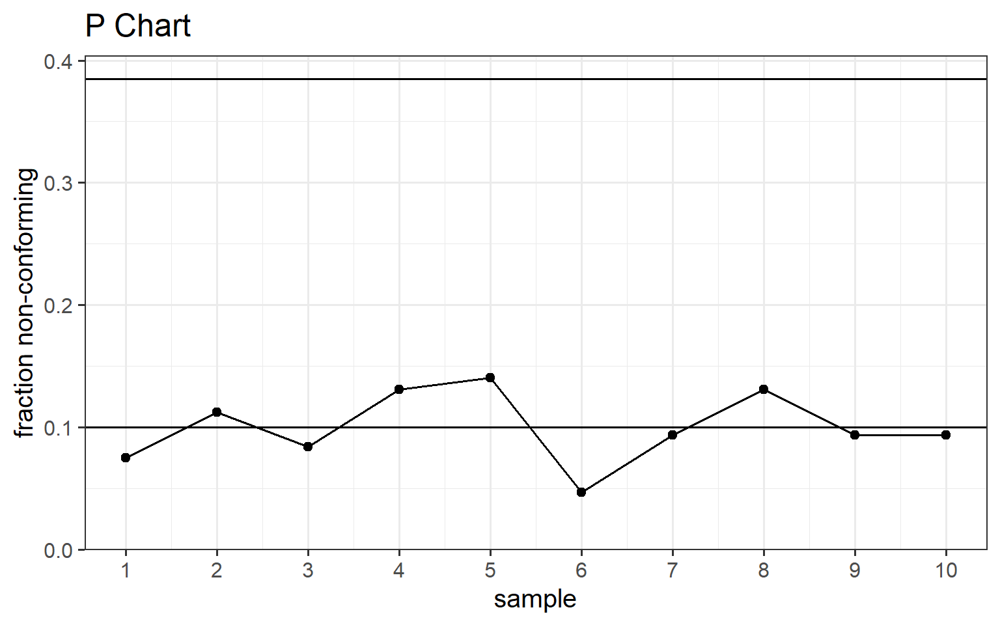
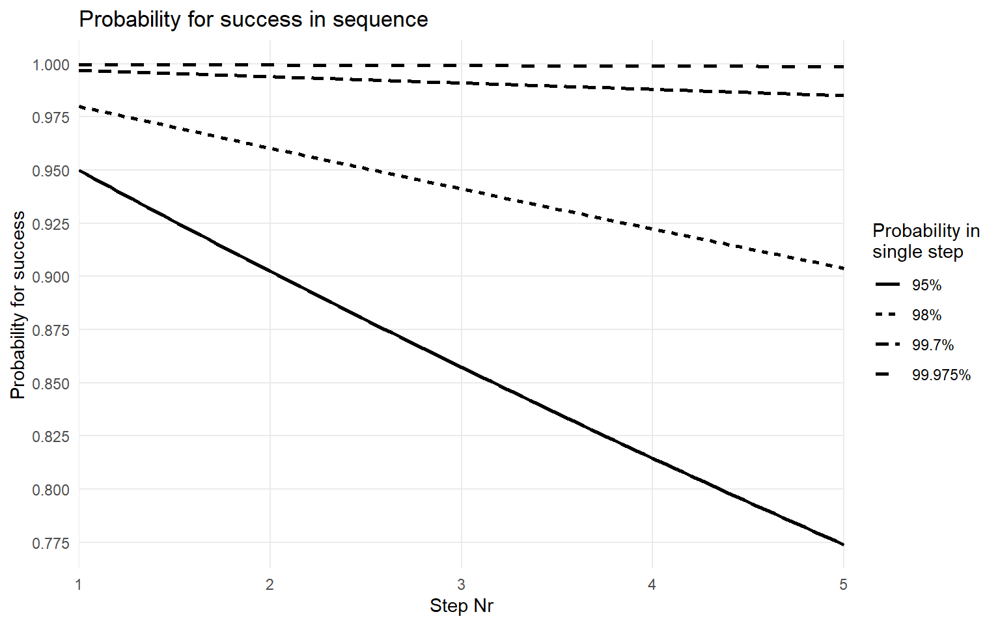
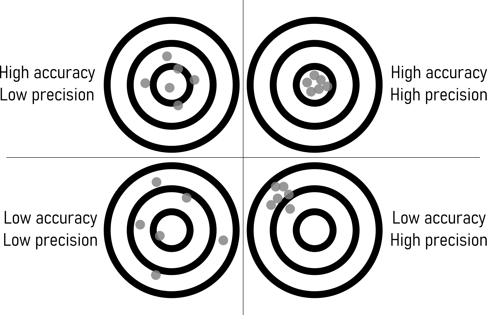
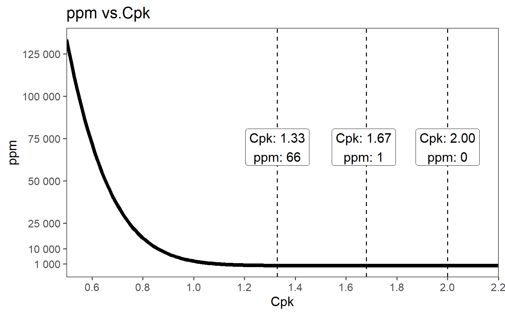
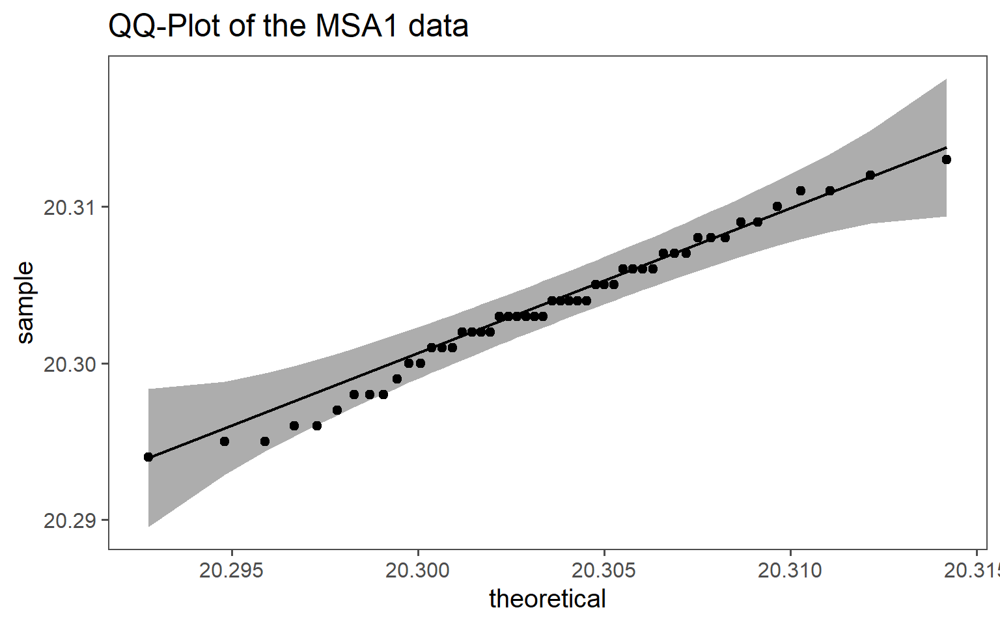
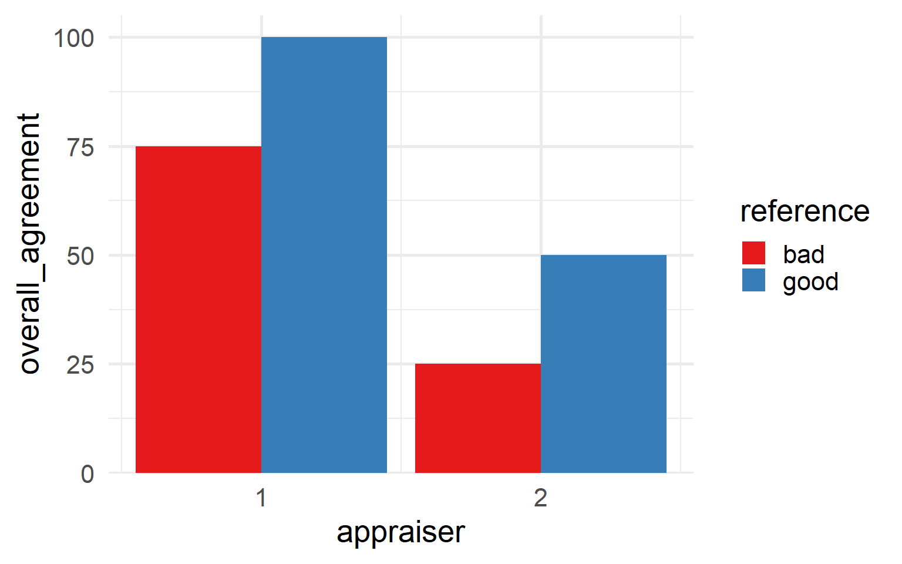

6 Production Statistics
6.1 Introduction to Production Statistics
Output and Yield statistics refer to the measurement of both the quantity and quality of products or services produced during a specific period. This includes tracking metrics such as the number of units produced, yield rates, and defect rates, as well as assessing production cycle times.
Resource Utilization statistics involve the monitoring and analysis of how efficiently resources such as labor, machinery, materials, and energy are used in production processes. Key metrics in this category include machine uptime, downtime, and overall resource efficiency.
Quality Control statistics play a vital role in evaluating the quality of products or services by tracking defects, errors, and variations in the production process. These statistics encompass defect rates, reject rates, and variation analysis to ensure products meet specified quality standards.
Cost Analysis through production statistics involves assessing the cost-effectiveness of production processes. This includes analyzing production costs, overhead expenses, and calculating the cost per unit produced. Such data aids in making informed decisions related to cost reduction and budgeting.
Inventory and Stock statistics pertain to the management of inventory levels and turnover rates. These statistics also encompass lead times and tracking stockouts, which are crucial for efficient inventory management and ensuring product availability.
Production Planning statistics are essential for optimizing production processes. Metrics include capacity utilization, order fulfillment rates, and production lead times. This data assists in scheduling and ensuring the efficient use of resources.
Downtime and Maintenance statistics track equipment breakdowns, maintenance schedules, and production interruptions. Monitoring such data is vital for minimizing production downtime and ensuring equipment operates efficiently.
Employee Productivity statistics evaluate workforce performance and efficiency. Metrics such as output per worker and labor efficiency are used to assess employee contributions and identify areas for improvement, including training needs.
Supply Chain Performance statistics extend beyond production to evaluate the entire supply chain, including suppliers, logistics, and distribution. Metrics like lead times, order fulfillment rates, and supplier performance data help ensure the efficiency of the supply chain.
Environmental and Sustainability Metrics encompass resource consumption, waste generation, and environmental impact. They are used to assess an organization’s environmental footprint and implement sustainable practices.
6.2 Control Charts for Variables
6.2.1 The production

In Figure 6.1 the drive shaft production and the behaviour of the mission critical parameter diameter is shown over time.
6.2.2 Run Chart

\[\begin{align} UCL &= \bar{x} + 2.58\frac{sd(x)}{\sqrt{n}} \;\text{with}\;GroupSize=1 \\ LCL &= \bar{x} - 2.58\frac{sd(x)}{\sqrt{n}} \;\text{with}\;GroupSize=1 \\ UWL &= \bar{x} + 1.96\frac{sd(x)}{\sqrt{n}} \;\text{with}\;GroupSize=1 \\ LWL &= \bar{x} - 1.96\frac{sd(x)}{\sqrt{n}} \;\text{with}\;GroupSize=1 \end{align}\]
In Shewhart (Shewhart and Deming 1986) charts for statistical process control, control limits such as the Upper Control Limit (UCL), Lower Control Limit (LCL), Upper Warning Limit (UWL), and Lower Warning Limit (LWL) play a crucial role. These limits establish boundaries for normal process variability. By incorporating confidence intervals, such as \(97\%\) or \(99\%\), into these limits, a statistical framework is added, providing a nuanced understanding of process variability. A \(97\%\) confidence interval implies that \(97\%\) of data points should fall within the calculated range, while a \(99\%\) interval accommodates \(99\%\). This approach enhances the sensitivity of Shewhart charts, aiding in the timely detection of significant process shifts. The choice of confidence level depends on the desired balance between false alarms and the risk of missing genuine deviations from the norm.
6.2.3 X-bar chart

\[\begin{align} UCL &= \bar{x} + 2.58\frac{sd(x)}{\sqrt{n}} \;\text{with}\;GroupSize=5 \\ LCL &= \bar{x} - 2.58\frac{sd(x)}{\sqrt{n}} \;\text{with}\;GroupSize=5 \\ UWL &= \bar{x} + 1.96\frac{sd(x)}{\sqrt{n}} \;\text{with}\;GroupSize=5 \\ LWL &= \bar{x} - 1.96\frac{sd(x)}{\sqrt{n}} \;\text{with}\;GroupSize=5 \end{align}\]
An X-bar chart is a statistical tool for quality control, used to monitor process stability over time. It involves collecting data, calculating subgroup means, determining control limits, and plotting the data on a chart. By monitoring points relative to the control limits, it helps identify shifts in the process mean, allowing corrective action for consistent quality.
It is effective in quality control because it focuses on detecting changes in the process mean. By setting statistical control limits, it distinguishes between common and special causes of variation. When data points fall outside these limits, it signals the presence of external factors, prompting corrective action. The chart’s visual representation of data points over time facilitates early issue detection, supporting a proactive approach to maintaining process stability and continuous improvement in quality control.
6.2.4 S-Chart

\[\begin{align} UCL &= \sigma * \sqrt{\frac{\chi^2_{1-\beta=0.995;n-1}}{n-1}} \;\text{with}\;n=5 \\ LCL &= \sigma * \sqrt{\frac{\chi^2_{1-\beta=0.005;n-1}}{n-1}} \;\text{with}\;n=5 \\ UWL &= \sigma * \sqrt{\frac{\chi^2_{1-\beta=0.975;n-1}}{n-1}} \;\text{with}\;n=5 \\ LWL &= \sigma * \sqrt{\frac{\chi^2_{1-\beta=0.025;n-1}}{n-1}} \;\text{with}\;n=5 \end{align}\]
An S chart, or standard deviation chart, is a type of control chart used in statistical process control. It is designed to monitor the variability or dispersion of a process over time. The S chart displays the sample standard deviation of a process by plotting it against time or the sequence of samples. Similar to other control charts, it typically includes a central line representing the average standard deviation and upper and lower control limits. The S chart is useful for detecting shifts or trends in the variability of a process, allowing for timely adjustments or interventions if needed.
6.3 Control Charts for Attributes
6.3.1 NP Chart

\[\begin{align} CL = n\bar{p} \pm 3\sqrt{n\bar{p}(1-\bar{p})} \end{align}\]
An NP chart, also known as a Number of Defects Per Unit chart, is a statistical tool used in quality control to monitor the number of defects or errors in a process over time. It is commonly employed in manufacturing and other industries to assess the stability and performance of a production process. The chart typically displays the number of defects observed in a sample of units or products, allowing for the identification of trends, patterns, or variations in the defect rates. This information aids in quality improvement efforts by enabling organizations to take corrective actions and maintain consistent product or service quality.
6.3.2 P Chart

\[\begin{align} CL = \bar{p} \pm 3\sqrt{\frac{\bar{p}(1-\bar{p})}{n}} \end{align}\]
The P chart is designed to track the proportion of nonconforming items or defects within a sample or subgroup over consecutive periods. The chart typically consists of a horizontal axis representing time periods and a vertical axis representing the proportion of nonconforming items. It helps identify variations and trends in the process, allowing for timely corrective actions when necessary.
P charts are commonly used in industries where the output is binary, such as the presence or absence of a specific attribute, and provide a visual representation of the process’s performance, aiding in quality improvement efforts.
6.4 Process Capability and Six Sigma
6.4.1 How good is good enough?

A success rate of \(95\%\) per step (Figure 6.7) sounds at first glance like a successful process. After all, having a \(95\%\) chance of winning the lottery would be awesome. Yet, the question is: What are the joint probabilities when we connect five steps sequentially? From previous chapters we know that the joint probability can be calculated in \(\eqref{jntprob}\).
\[\begin{align} P_{ges} = P_1 * P_2 * P_3 * P_4 * P_5 = 0.95^{(n=5)}=0.774 \approx 77.4\% \label{jntprob} \end{align}\]

The joint probability for n-steps in sequence can therefore be estimated using \(\eqref{jntprob}\) and visually represented in Figure 6.8. On the x-axis the number of steps is depicted whereas on the y-axis the joint probability is shown for the respective step index. As also calculated in \(\eqref{jntprob}\) after \(n=5\) steps the joint probability for a good part drops to around \(77\%\), which is not acceptable. Figure 6.8 shows that not even \(98\%\) probability for a good part for a single step results in an acceptable joint probability (\(P = 0.98^{n=5} = 0.904\)). A staggering probability of \(99.7\%\) for a single step is necessary to still reach a probability for a good part of \(98\%\), and this is only true for \(n = 5\)steps. For an acceptable parts per milltion (ppm) rate the acceptable single step probability is \(99.975\%\) as shown in Figure 6.8.
What that means in a tolerance-specification setting is shown in Figure 6.9. In order to ensure a \(99.975\%\) for a continuous variable, the process variation (here measured as process standard deviation) must fit at least 6 times into the actual tolerance/specification window of the Critical to Quality (CTQ) measure. Additionally, this is only true if the process is centered. The term \(6\sigma\) carries this inherent property for a \(0ppm\) production, which is favoured by many, but achieved by few.
6.4.2 The Six Sigma Project Model (DMAIC)

The Six Sigma Project model consists of five phases in total: (D)efine, (M)easure, (A)nalyse, (I)mprove, (C)ontrol. In essence these project phases are the application of the scientific method, but in a systematic and industry friendly way.
The Define Phase involves setting the project’s goals and objectives, identifying key stakeholders, developing a high-level process map, and defining customer requirements and critical-to-quality (CTQ) characteristics. Additionally, the project scope is established, and a project charter is developed to guide the overall initiative.
In the Measure Phase, key process metrics are identified, and relevant data is collected to assess the current state of the process. This phase includes analyzing process capability, creating detailed process maps, performing baseline measurements, and identifying potential data sources to ensure comprehensive data collection.
During the Analyze Phase, potential root causes of process variation are identified through data analysis using statistical tools. Hypotheses for root causes are developed and verified through further data analysis. Root causes are then prioritized based on their impact and feasibility, and findings are validated with stakeholders to ensure accuracy and relevance.
The Improve Phase focuses on generating and evaluating potential solutions for process improvement. Implementing these improvements involves developing an implementation plan, conducting pilot tests if applicable, and optimizing the process based on feedback. Control measures are implemented to sustain the improvements achieved.
Finally, the Control Phase involves developing control plans to monitor process performance continuously. This includes establishing process controls and standard operating procedures, implementing mistake-proofing measures, and defining key performance indicators (KPIs). Additionally, training programs for process stakeholders are developed, and a system for ongoing monitoring and feedback is established to ensure the process remains effective over time.
6.4.3 Process Capability - idea

Process capability refers to the ability of a process to consistently produce outputs that meet predetermined specifications or requirements. It is a measure of how well a process performs relative to its specifications. The general idea behind process capability is to assess the inherent variability of a process and determine whether it is capable of producing products or services within the desired quality limits.
Specification Limits: These are the predetermined limits or requirements for a particular process output, defining the range within which the product or service should fall to meet customer expectations.
Process Variation: This refers to the natural variability inherent in the process. Sources of variation can include factors such as machine performance, material properties, human factors, and environmental conditions.
Process Capability Indices: These are statistical measures used to quantify the relationship between process variation and specification limits. Common indices include \(C_p\), \(C_{pk}\), \(P_p\), and \(P_{pk}\), which provide insights into whether a process is capable of meeting specifications and how well it is centered within the specification limits.
Assessment and Improvement: Once process capability is assessed, steps can be taken to improve it if necessary. This may involve reducing process variation, adjusting process parameters, implementing quality control measures, or redesigning the process altogether.
Overall, the goal of analyzing process capability is to ensure that processes are capable of consistently delivering products or services that meet customer requirements, minimize defects, and optimize quality and efficiency.
6.4.4 High Accuracy - Low Precision

In this scenario, the process consistently produces results that are very close to the target or desired value (high accuracy). However, the variation among individual measurements is large, meaning they are not tightly clustered around the target value (low precision). For example, if a machine consistently produces parts with dimensions close to the desired specifications but with significant variation in each part’s dimensions, it exhibits high accuracy but low precision.
6.4.5 Low Accuracy - Low Precision

Here, the process consistently produces results that are far from the target or desired value (low accuracy). Additionally, the variation among individual measurements is large, indicating low precision. An example could be a manufacturing process that consistently produces parts with dimensions that are both far from the desired specifications and vary significantly from one part to another.
6.4.6 Low Accuracy - High Precision

This scenario involves a process that consistently produces results that are tightly clustered around a single point, but that point is far from the target or desired value (low accuracy). For instance, if a weighing scale consistently displays a weight that is slightly off from the true weight but shows very little variation between repeated measurements, it demonstrates low accuracy but high precision.
6.4.7 High Accuracy - High Precision

This is the ideal scenario where the process consistently produces results that are both very close to the target or desired value (high accuracy) and tightly clustered around that value (high precision). For example, a manufacturing process that consistently produces parts with dimensions very close to the desired specifications and with minimal variation between individual parts exhibits both high accuracy and high precision.
6.4.8 Computing Process Capabilities

\[\begin{align} C_{p} &= \frac{USL-LSL}{6*sd} \label{CpCalc} \\ C_{pk} &= \frac{\min(USL-\bar{x},\bar{x}-LSL)}{3*sd} \label{CpkCalc} \end{align}\]
\(C_p\) compares the spread of the process variation to the width of the specification limits \(\eqref{CpCalc}\). A \(C_p\) value greater than \(1\) indicates that the process spread fits within the specification limits, suggesting that the process has the potential to meet specifications. However, \(C_p\) does not take into account the process mean, so it does not provide information about process centering. For a more comprehensive assessment of process capability, both \(C_p\) and \(C_{pk}\) are often used together.
The \(C_{pk}\) value indicates the capability of the process relative to the specified limits \(\eqref{CpkCalc}\). A \(C_{pk}\) value greater than 1 indicates that the process spread (6 standard deviations) fits within the specification limits. A value less than 1 indicates that the process spread exceeds the specification limits, indicating potential issues with meeting specifications. A higher \(C_{pk}\) value indicates better process capability.
6.4.9 Process Capabilities and ppm

Process capability and parts per million (PPM) are closely related metrics used to assess the performance of manufacturing processes. They provide a statistical measure of how well a process can produce output within specified limits. PPM is a measure of the number of defective parts per million produced by the process. The connection between process capability indices and PPM can be understood through statistical distributions, primarily the normal distribution, and the concept of defects or non-conformance.
The connection between process capability indices and PPM can be established through the Z-score (Z-standardization), which translates process capability into the probability of defects.
Using \(C_p\): Assuming the process is centered and follows a normal distribution: \(Z = 3C_p\). The corresponding PPM can be found from standard normal distribution tables. For example, if \(C_p = 1\), then \(Z = 3\), and the area under the normal curve beyond \(3\) standard deviations on either side is approximately \(0.0027\), or \(2700PPM\).
Using \(C_{pk}\) \(C_{pk}\) directly relates to the Z-score: \(Z = 3C_{pk}\). The PPM can be calculated using the cumulative distribution function for the normal distribution. For example, if \(C_{pk} = 1.33\), then \(Z = 3 \times 1.33 = 3.99\). Using standard normal distribution tables, the area beyond \(Z = 3.99\) is approximately \(0.000066\), or \(66ppm\).
6.5 The role of measurement accuracy in production
6.5.1 Measurement Errors

In scientific experiments and real-world measurements, there are often inherent sources of random error (Nuzzo 2014). These errors can introduce variability into measurements, and the accumulation of these errors often conforms to a normal distribution. For instance, when measuring the diameter of an object with a caliper, small measurement errors can cause the observed values to follow a normal distribution. Even during such a simple measurement some random errors may include:
Parallax Error: Parallax can introduce random errors if the observer’s eye is not consistently aligned with the scale or graduations during measurements.
Dirt or Debris: Foreign particles or debris on the measuring surfaces can lead to random measurement errors by causing slight variations in the contact points between the caliper and the object.
Jaw Alignment: Small variations in the alignment of the caliper jaws from one measurement to another can introduce random errors in measurements.
Material Deformation: When measuring soft or deformable materials, random errors can occur due to variations in the material’s response to pressure during different measurements.
Human Error: Random errors can arise from misreading the scale or not positioning the caliper precisely on the object, especially if different operators are involved.
Slop or Play in the Jaws: Variability in the amount of play or slop in the caliper’s jaws from one measurement to another can lead to random errors in measurements.
6.5.2 Significant Digits in Production

Significant digits, or significant figures, are vital for precision and quality in production. They ensure precision, quality, and consistency in production, leading to better efficiency and customer satisfaction. Significant digits indicate the precision of measurements, ensuring products meet quality standards and specifications.
Applications:
- Quality Control: Accurate measurements ensure consistent product quality.
- Tolerances: Precise tolerances (e.g., \(\pm0.05 mm\)) must be adhered to.
- Fit and Interchangeability: Parts must fit together correctly, requiring precise measurements.
- Calibration: Instruments must match the required significant digits for accuracy.
- Documentation: Accurate recording of measurements is essential for quality reports and compliance.
- Training: Employees must understand and apply significant digits to maintain standards.
Best Practices:
- Reduce Human Error: Training and audits are essential.
- Use Proper Instruments: Ensure tools can measure accurately.
- Control Environment: Manage factors like temperature and humidity.
- Follow Rounding Rules: Apply proper rounding to maintain precision.
6.5.2.1 General Rule of Thumb
To maintain accuracy and avoid overestimating the precision of results, it’s advisable not to report more significant digits than justified by the precision of the input measurements.
6.5.2.2 Rule of Ten
In practical terms, for a number to be considered significant, it should be at least ten times greater than the smallest unit of measure (i.e., the least significant digit). This helps in avoiding overestimating the precision and ensures that the reported figures are meaningful.
6.5.2.3 Addition and Subtraction
When performing addition or subtraction, the result should be reported with the same number of decimal places as the measurement with the fewest decimal places. For instance, if you add \(12.11\) (two decimal places) to \(0.4\) (one decimal place), the result should be reported with one decimal place, as \(12.5\).
6.5.2.4 Multiplication and Division
When performing multiplication or division, the result should be reported with the same number of significant digits as the measurement with the fewest significant digits. For example, if you multiply \(2.34\) (three significant digits) by $0.0$5 (one significant digit), the result should be reported with one significant digit, as \(0.1\).
6.5.2.5 edge cases

Significant digits can help with edge cases that naturally occur during measurement processes. As depicted in Figure 6.20, the first two measurements are well within specification. The third measurement can actually not be interpreted, as the measurement instrument seems not to be fit for purpose. The fourth measurement shows, that the product is within the specification, it always holds the number with the smallest number of digits. The measurement of the fifth product is just within specification, the gage that shoed the last reading is not accurate enough.
There are many rules involved in these kind of edge cases including the rounding of number. It is referred to (Standards, (U.S.), and SEMATECH. 2002) or the national standards for more elaborate discussions about this manner.
6.5.3 Measurement System Analysis Type I
In conducting a Measurement System Analysis Type I (MSA1), the initial step involves focusing on gage as the sole source of variation. To achieve this, 50 measurements are performed, each repeated on a reference part. This process allows for the isolation and assessment of the gage’s impact on the overall measurement system, ensuring that any observed variability is attributed solely to the gage. The process of doing a MSA1 is fairly standardized.
6.5.3.1 Potential Capability index \(C_g\)
From a MSA1 the potential Measurement System Capability Index \(C_g\) can be computed via \(\eqref{Cg}\).
\[\begin{align} C_g = \frac{K/100*Tol}{L*\sigma} \label{Cg} \end{align}\]
- \(Tol\)
- Tolerance
- \(C_g\)
- Capability Gage
- K
- percentage of the tolerance (\(20\%\))
- \(\sigma\)
- standard deviations of the tolerance
- L
- number of standard deviations that represent the process (\(6\times\))
6.5.3.1.1 Capability index with systematic error \(C_{gk}\)
Very similar to the process capability, a \(C_g\) gives only the potential capability as it does not include if the measures are centered around a mean. This is overcome by computing the Measurement Capability Index with systematic error \(C_{gk}\), which incorporates the mean via \(\eqref{Cgk}\).
\[\begin{align} C_{gk} = \frac{(0.5*K/100)*Tol - |\bar{x}-x_{true}|}{3*\sigma} \label{Cgk} \end{align}\]
- \(Tol\)
- Tolerance
- \(\bar{x}\)
- mean of the measurements
- K
- percentage of the tolerance (\(20\%\))
- \(x_{true}\)
- the “true” value of the reference (calibration)
- \(\sigma\)
- standard deviation of the measurements
6.5.3.2 MSA1 example
| Characteristic | N = 501 |
|---|---|
| measured_data | 20.303 (0.005) |
| 1 Mean (SD) | |
In Table 6.1 the raw data that was collected during the experiments is depicted, whereas in Figure 6.21 the same data is shown in graphical format.
On the x-axis the measurement index is shown, the y-axis shows the measurment value. One of the main advantages of a MSA1 is, that a reference value is known, because the values are taken agains a standard reference normal. This true value (x_true in Figure 6.21, dashed black line) allows the estimation of a systematic error. The \(20\%\) tolerance \(\eqref{Cgk}\) is shown as dashed green line. This is the reduced tolerance in which the gage shall be capable to produce good measurement values.
6.5.3.2.1 Data Distribution

Measurement errors are often assumed to be normally distributed due to the CLT and the nature of random processes involved. The CLT states that the sum of many independent, random variables tends to follow a normal distribution, even if the original variables are not normally distributed. Measurement errors typically result from the combination of numerous small, independent errors, such as instrument precision, environmental factors, and human mistakes. This aggregation leads to a normal distribution of the overall errors.
Additionally, many error sources are random and independent, further supporting the normal distribution assumption. The normal distribution is mathematically convenient, being fully described by its mean and variance, which simplifies statistical analysis and hypothesis testing. Empirical evidence across various fields also shows that measurement errors often approximate a normal distribution.
While the normal distribution is a useful assumption, it may not always be valid. In cases with asymmetric errors, heavy tails, or significant outliers, other distributions may be more appropriate. Nonetheless, for many practical purposes, assuming a normal distribution for measurement errors is reasonable and effective.
6.5.3.2.2 computed values
| Cg | Cgk |
|---|---|
| 2.13 | 2.02 |
In Table 6.2 the numeric values for \(C_g\) and \(C_{gk}\) are shown. Both values are well above \(1.33\) which indicates that the gage is fit for the measurement purpose at hand (defined by the tolerance). The potential gage capability (\(C_g\)) is greater than the actual gage capability \(C_{gk}\) which implies a systematic error, but the numeric values being \(>2\) there seems not to be any reason to take serious action. If the systematic error is significant could be tested using the t-test for one variable.
6.5.4 Measurement System Analysis Type II (Gage R&R)

A Gage R&R study assesses the variation in measurements from a specific process by measuring the same parts multiple times with the same instrument by different operators. It helps determine the reliability of the measurement system and identifies areas for improvement.
6.5.4.1 Definitions
- Accuracy
- The closeness of agreement between a test result and the accepted reference value(Cano, Moguerza, and Redchuk 2012).
- Trueness
- The closeness of agreement between the average value obtained from a large series of test results and an accepted reference value(Cano, Moguerza, and Redchuk 2012).
- Precision
- The closeness of agreement between independent test results obtained under stipulated conditions(Cano, Moguerza, and Redchuk 2012).
- Repeatability
- Precision under repeatability conditions (where independent test results are obtained using the same method on identical test items in the same laboratory by the same operator using the same equipment within short intervals of time)(Cano, Moguerza, and Redchuk 2012).
- Reproducibility
- Precision under reproducibility conditions (where test results are obtained using the same method on identical test items in different laboratories with different operators using different equipment)(Cano, Moguerza, and Redchuk 2012).
6.5.4.2 Introductory example
- A battery manufacturer makes several types of batteries for domestic use.
- Voltage is Critical To Quality (CTQ)
- the parts are the batteries \(a = 3\)
- the appraisers are the voltmeters \(b = 2\)
- measurement is taken three times \(n = 3\)
- \(a \times b \times n = 3 \times 2 \times 3 = 18\) measurements
6.5.4.3 The data
6.5.4.4 The analysis
anova(lm(voltage ~ battery + voltmeter + battery * voltmeter,
data = ss.data.batteries))Analysis of Variance Table
Response: voltage
Df Sum Sq Mean Sq F value Pr(>F)
battery 2 0.063082 0.031541 1.9939 0.1788
voltmeter 1 0.044442 0.044442 2.8095 0.1195
battery:voltmeter 2 0.018472 0.009236 0.5839 0.5728
Residuals 12 0.189821 0.015818 WOW!
6.5.4.5 Variance decomposition - the theory
6.5.4.5.1 Repeatability
\[\begin{align} \sigma^2_{Repeatability} = MSE \end{align}\]
- directly obtainable in ANOVA table
6.5.4.5.2 Reproducibility
\[\begin{align} \sigma^2_{Reproducibilty} = \sigma^2_{Appraiser} + \sigma^2_{Interaction} \end{align}\]
\[\begin{align} \sigma^2_{Appraiser} = \frac{MSB-MSAB}{a \times n} \end{align}\]
- \(\sigma^2_{Appraiser}\)
- Variance introduced by appraisers
- \(MSB\)
- Mean of squares - B
- \(MSAB\)
- Mean squares of interaction - AB
- \(a\)
- number of levels for factor - number of batteries: 3
- \(n\)
- number of replicated measures: 3
\[\begin{align} \sigma^2_{Interaction} = \frac{MSBA-MSE}{n} \end{align}\]
- \(\sigma^2_{Interaction}\)
- Variance introduced by interaction
- \(MSAB\)
- Mean squares of interaction - AB
- \(MSE\)
- Mean squares of error
- \(n\)
- number of replicated measures: 3
6.5.4.5.3 Gage R&R
\[\begin{align} \sigma^2_{Gage\;R\&R} = \sigma^2_{Repeatability} + \sigma^2_{Reproducibility} \end{align}\]
All variance is calculated that comes from the Gage!
Are we finished?
We measure something, so what about the part?
6.5.4.5.4 Part to Part
\[\begin{align} \sigma^2_{Part\; to \; Part} = \frac{MSA-MSAB}{b \times n} \end{align}\]
- \(\sigma^2_{Part\; to \; Part}\)
- Variance introduced by the parts
- \(MSA\)
- Mean of squares - A
- \(MSAB\)
- Mean squares of interaction - AB
- \(b\)
- number of appraisers - number of voltmeters: 2
- \(n\)
- number of replicated measures: 3
6.5.4.5.5 Total Variability

6.5.4.6 Variance decomposition - the values
\[\begin{align} \sigma^2_{Repeatability} &= 0.0158 \nonumber \\ \sigma^2_{Appraiser} &= 0.0039 \nonumber \\ \sigma^2_{Interaction} &= 0 <0 \rightarrow 0 \nonumber \\ \sigma^2_{Reproducibility} &= 0.0039 \nonumber \\ \sigma^2_{Gage\;R\&R} &= 0.0197 \nonumber \\ \sigma^2_{Part\; to \; Part} &= 0.0037 \nonumber \\ \sigma^2_{Total} &= 0.0234 \nonumber \end{align}\]
6.5.4.7 Gage R&R “standardized output”
6.5.4.7.1 AVNOVA table
Df Sum Sq Mean Sq F value Pr(>F)
battery 2 0.06308 0.03154 3.415 0.227
voltmeter 1 0.04444 0.04444 4.812 0.160
battery:voltmeter 2 0.01847 0.00924 0.584 0.573
Repeatability 12 0.18982 0.01582
Total 17 0.31582 6.5.4.7.2 ANOVA reduced model
Df Sum Sq Mean Sq F value Pr(>F)
battery 2 0.06308 0.03154 2.120 0.157
voltmeter 1 0.04444 0.04444 2.987 0.106
Repeatability 14 0.20829 0.01488
Total 17 0.31582 6.5.4.7.3 Variance decomposition
VarComp %Contrib
Total Gage R&R 0.018162959 86.74
Repeatability 0.014878111 71.05
Reproducibility 0.003284848 15.69
voltmeter 0.003284848 15.69
Part-To-Part 0.002777127 13.26
Total Variation 0.020940086 100.006.5.4.7.4 Study Variance
StdDev StudyVar %StudyVar %Tolerance
Total Gage R&R 0.13477002 0.8086201 93.13 80.86
Repeatability 0.12197586 0.7318552 84.29 73.19
Reproducibility 0.05731359 0.3438816 39.61 34.39
voltmeter 0.05731359 0.3438816 39.61 34.39
Part-To-Part 0.05269846 0.3161907 36.42 31.62
Total Variation 0.14470690 0.8682414 100.00 86.826.5.4.7.5 ndc - number of distinct categories
[1] 16.5.4.7.6 standardized graphical output

6.5.4.8 Gage R&R in the classroom
3 parts
3 volunteers
1 recorder
1 gage
10 experiments
3 repetitions
randomize the trials
now do it
6.5.4.9 Attribute Agreement Analysis
Attribute Agreement Analysis (AAA) is a statistical method used to evaluate the agreement among multiple observers when assigning categorical ratings to items. It involves defining attributes, selecting observers, collecting ratings, and analyzing the data to determine the level of agreement. This helps ensure the reliability of assessments and informs decision-making processes.
6.5.4.9.1 Setup

6.5.4.9.2 Results
| appraiser | runs | units | reference | results |
|---|---|---|---|---|
| 1 | 1 | 3 | bad | bad |
| 1 | 1 | 1 | good | good |
| 1 | 1 | 2 | bad | good |
| 2 | 1 | 3 | bad | good |
| 2 | 1 | 1 | good | good |
| 2 | 1 | 2 | bad | good |
| 1 | 2 | 3 | good | good |
| 1 | 2 | 1 | bad | bad |
| 1 | 2 | 2 | bad | bad |
| 2 | 2 | 3 | good | bad |
| 2 | 2 | 1 | bad | bad |
| 2 | 2 | 2 | bad | good |
6.5.4.9.3 Overall agreement
\[\begin{align} Agreement_{overall} = 100 \times \frac{X}{N} \end{align}\]
- \(X\)
- number of times appraisers agree with reference
- \(N\)
- number of rows with valid data
\[\begin{align} Agreement_{overall} = 58.3\% \nonumber \end{align}\]
6.5.4.9.4 Appraiser Agreement
\[\begin{align} Agreement_{appraiser} = 100 \times \frac{X}{N} \end{align}\]
- \(X\)
- number of times the single appraisers agrees with reference
- \(N_i\)
- number of runs for the \(i\)-th appraiser
\[\begin{align} Appraiser_{1} &= 83.3\% \nonumber \\ Appraiser_{2} &= 33.3\% \nonumber \end{align}\]
6.5.4.9.5 Reference Agreement
\[\begin{align} Agreement_{reference} = 100 \times \frac{X}{N} \end{align}\]
- \(X\)
- number of times result agrees with the reference
- \(N_i\)
- number of runs for the \(i\)-th result
\[\begin{align} Reference_{bad} &= 50\% \nonumber \\ Reference_{good} &= 75\% \nonumber \end{align}\]
6.5.4.9.6 Run agreement
\[\begin{align} Agreement_{run} = 100 \times \frac{X}{N} \end{align}\]
- \(X\)
- number of reference agreement in runs
- \(N_i\)
- number of runs for the \(i\)-th run
\[\begin{align} Reference_{1} &= 50\% \nonumber \\ Reference_{2} &= 66.7\% \nonumber \end{align}\]
6.5.4.9.7 Appraiser and reference agreement
\[\begin{align} Agreement_{appraiser \; ref} = 100 \times \frac{X}{N} \end{align}\]
- \(X\)
- number of reference agreement in for appraisers in reference class
- \(N_i\)
- number of agreements for the \(i\)-th appraiser and the \(i\)-th standard
| appraiser | reference | overall_agreement |
|---|---|---|
| 1 | bad | 75.00% |
| 1 | good | 100.00% |
| 2 | bad | 25.00% |
| 2 | good | 50.00% |
6.5.4.9.8 graphical representation

